Kapitel 5 Visualisering - ggplot2 dag 2
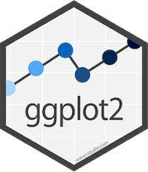
5.1 Læringsmål og videoer
I dette kapitel udvider du værktøjskassen af kommandoer i pakken ggplot2, så du kan opnå større fleksibilitet i dine visualiseringer. Jeg anbefaler, at du bruger notaterne som en reference, samtidig med at du arbejder med problemstillingerne.
Du skal være i stand til at:
- Arbejde fleksibelt med koordinatsystemer – transformere, modificere og spejle (“flip”) x- og y-aksen.
- Udvide brugen af farver og punktformer.
- Tilføje tekst direkte på plottet ved hjælp af
geom_text()oggeom_text_repel(). - Bruge
facet_grid()ellerfacet_wrap()til at opdele plots efter en kategorisk variabel.
Tjekliste til Kapitel 5: ggplot2 (dag 2)
- Se videoerne
- Kig igennem kursusnotaterne
- Lav quiz “ggplot2 - dag 2”
- Lav problemstillingerne
5.2 Koordinatsystemer
Her arbejder vi videre med koordinater i pakken ggplot2.
5.2.1 Zoom (coord_cartesian(), expand_limits())
Man kan bruge funktionen coord_cartesian() til at zoome ind på et bestemt område i plottet. Inden i coord_cartesian() angives xlim og ylim, som specificerer de nedre og øvre grænser langs henholdsvis x-aksen og y-aksen. Man kan også bruge xlim() og ylim() uden coord_cartesian(), men i så fald bliver de punkter, som ligger uden for de angivne grænser, fjernet fra datasættet (og R giver en advarsel). Med coord_cartesian() beholder man til gengæld samtlige data, og man får derfor ingen advarsel.
Nedenfor kan I se vores oprindelige scatter plot:
ggplot(iris, aes(x = Sepal.Length, y = Sepal.Width,color = Species)) +
geom_point() +
theme_minimal() 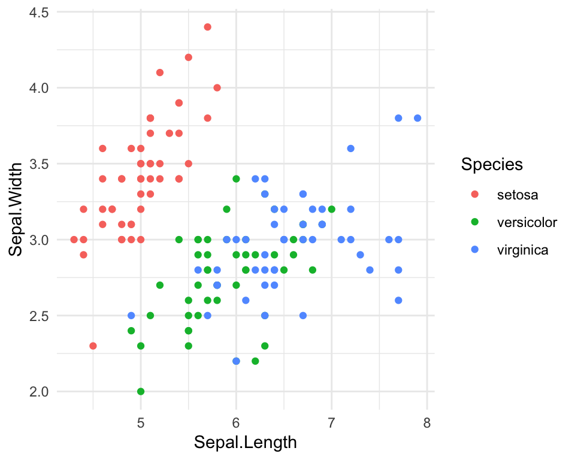
Og her anvender jeg funktionen coord_cartesian() samt xlim og ylim til at zoome ind på det udvalgte område på plottet:
ggplot(iris, aes(x = Sepal.Length, y = Sepal.Width,color = Species)) +
geom_point() +
coord_cartesian(xlim = c(4,6), ylim = c(2.2,4.5)) +
theme_minimal() 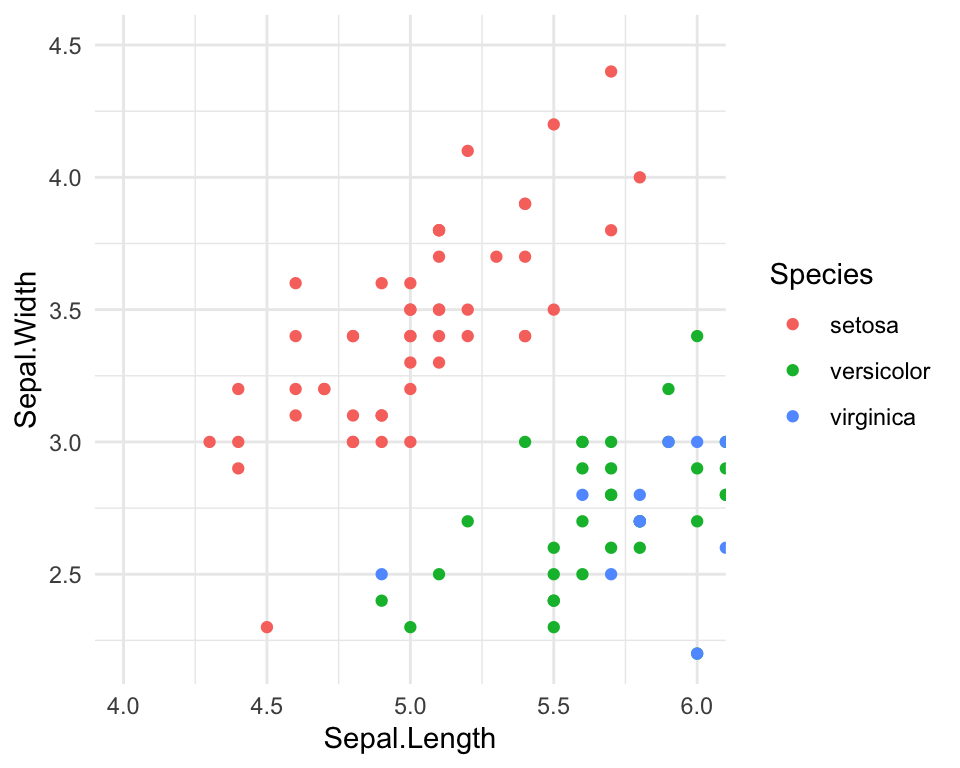
Du kan også zoome ud ved at bruge expand_limits() – for eksempel hvis du gerne vil have punkterne \(x = 0\) og \(y = 0\) (c(0,0) eller origo) med i selve plottet:
ggplot(iris, aes(x=Sepal.Length, y=Sepal.Width,col=Species)) +
geom_point() +
expand_limits(x = 0, y = 0) +
theme_minimal() 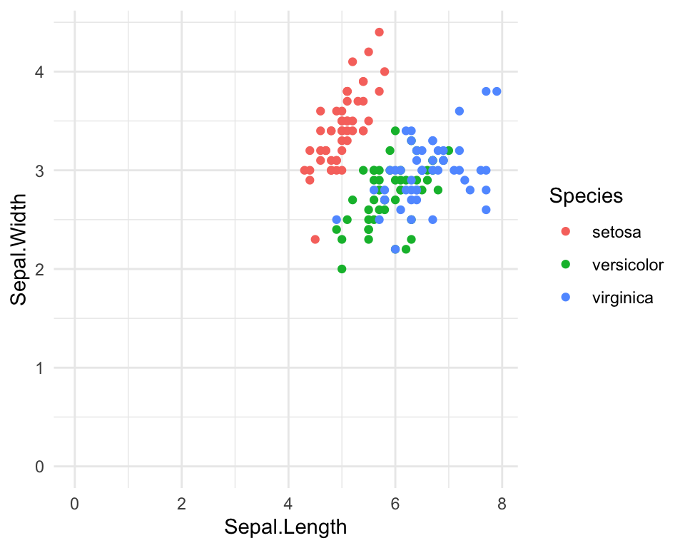
Det kan være brugbart i situationer, hvor man for eksempel har flere etiketter omkring punkterne i selve plottet, som bedre kan ses, hvis man giver lidt ekstra plads.
5.2.2 Transformering af akserne – log, sqrt osv. (scale_x_continuous())
Nogle gange kan det være svært at visualisere visse variable på grund af deres fordeling. Hvis der er mange outliers i en variabel, vil de fleste punkter samle sig i et lille område i plottet. Transformering af x-aksen og/eller y-aksen med enten log eller sqrt er en populær tilgang til at visualisere dataene på en mere informativ måde:
ggplot(iris, aes(x=Sepal.Length, y=Sepal.Width,col=Species)) +
geom_point(size=3) +
scale_x_continuous(trans = "log2") +
scale_y_continuous(trans = "log2") +
theme_minimal() 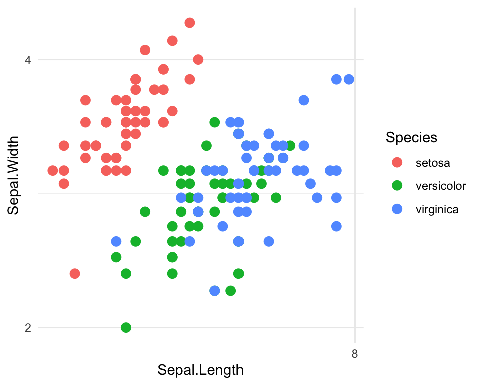
Man kan også prøve at bruge "sqrt" i stedet for "log2".
Det er dog vigtigt at bemærke, at dette adskiller sig fra at transformere selve de data, som bruges i plottet. Man kan for eksempel opnå det samme resultat ved at ændre datasættet, før man anvender ggplot2. Her behøver man ikke at bruge scale_x_continuous(trans = "log2"), men bemærk, at tallene på akserne da afspejler de transformerede data og ikke de oprindelige værdier. Valget afhænger af, hvad man gerne vil opnå med analysen af dataene.
iris$Sepal.Length <- log2(iris$Sepal.Length)
iris$Sepal.Width <- log2(iris$Sepal.Width)
ggplot(iris, aes(x=Sepal.Length, y=Sepal.Width,col=Species)) +
geom_point(size=3) +
theme_minimal() 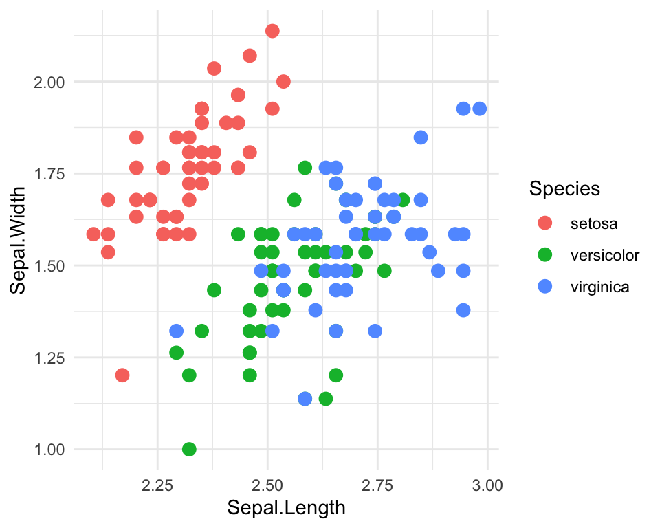
5.2.3 Spejl koordinater (coord_flip())
Vi kan bruge coord_flip() til at bytte om på x-aksen og y-aksen (hvilket svarer til at dreje plottet 90 grader). Se følgende eksempel, hvor jeg først opretter variablen Sepal.Group, laver et barplot og anvender coord_flip() for at få søjlerne til at ligge vandret:
#Sepal.Group defineret som i går
iris$Sepal.Group <- ifelse(iris$Sepal.Length>mean(iris$Sepal.Length),"Long","Short")
ggplot(iris,aes(x=Species,fill=Sepal.Group)) +
geom_bar(stat="count",position="dodge",color="black") +
coord_flip() +
theme_minimal()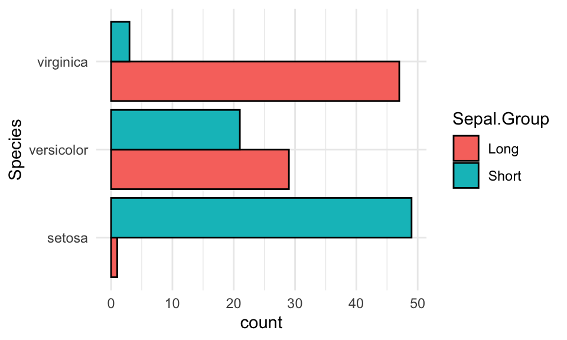
Man kan ændre rækkefølgen af de tre Species ved at bruge funktionen scale_x_discrete() og angive den nye rækkefølge med indstillingen limits:
ggplot(iris,aes(x=Species,fill=Sepal.Group)) +
geom_bar(stat="count",position="dodge",color="black") +
coord_flip() +
scale_x_discrete(limits = c("virginica", "versicolor","setosa")) +
theme_minimal()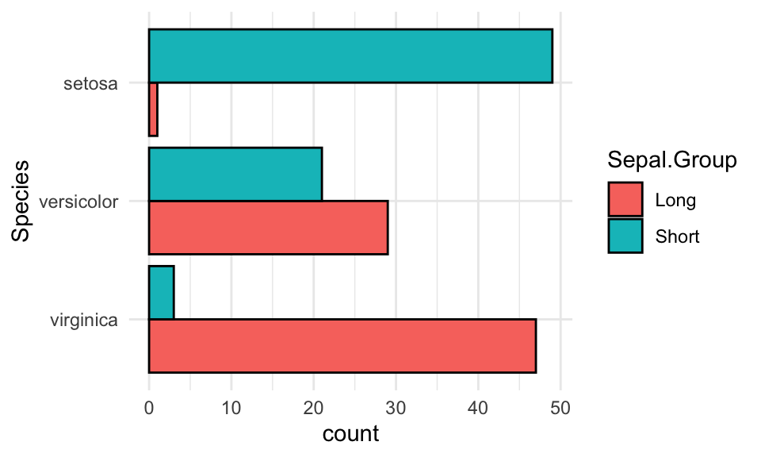
5.3 Mere om farver og punktformer
Der er flere måder at specificere farver på i ggplot2. Man kan nøjes med den automatiske løsning, som er hurtig (og effektiv i mange situationer), eller man kan bruge den manuelle løsning, som tager lidt længere tid at kode, men er brugbar, hvis man gerne vil lave et plot til præsentation for andre.
5.3.1 Automatiske farver
Her er den nemme løsning, hvor vi anvender automatisk farvelægning ved at benytte colour=Species inden i aes():
#automatisk løsning
ggplot(iris, aes(x=Sepal.Length, y=Sepal.Width, colour=Species)) +
geom_point() +
theme_minimal() 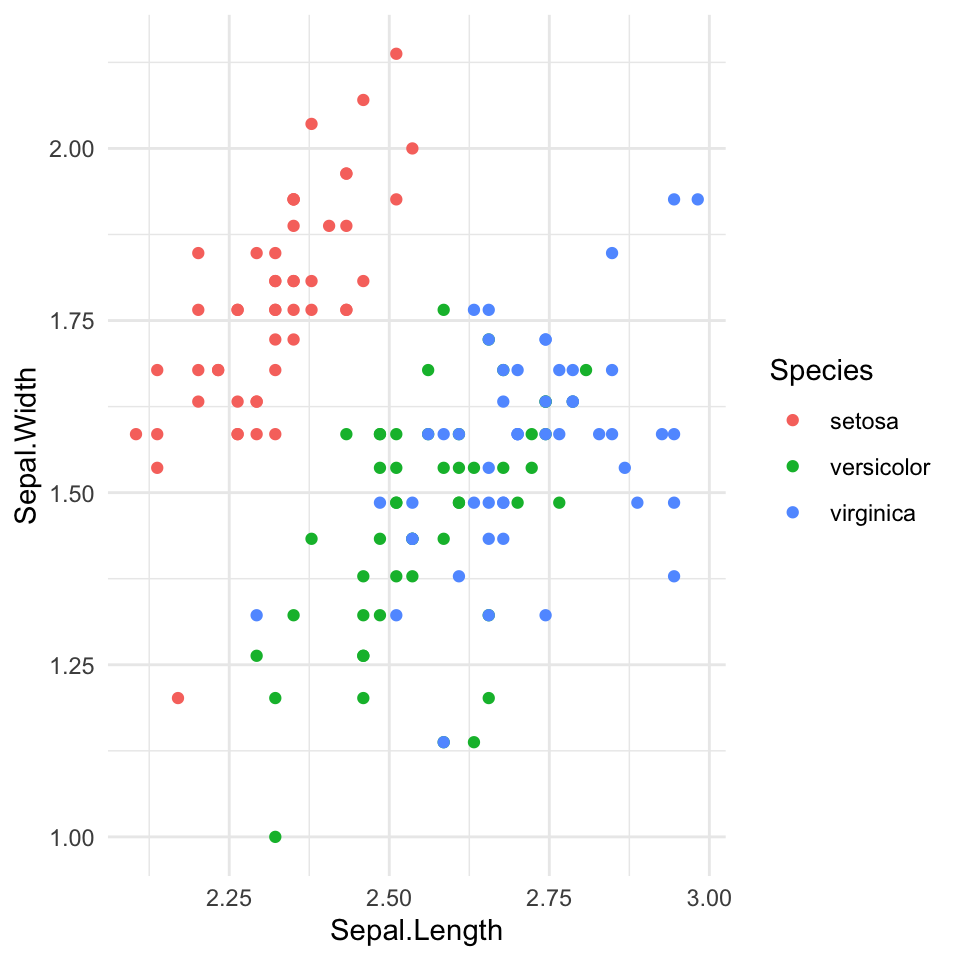
5.3.2 Manuelle farver
Hvis man foretrækker at bruge sine egne farver, kan man gøre det ved at benytte funktionen scale_colour_manual(). Her angiver man stadig colour=Species inden i aes(), men man specificerer farverne for de forskellige arter i scale_colour_manual() med indstillingen values:
#manuelt løsning
ggplot(iris, aes(x=Sepal.Length, y=Sepal.Width, colour=Species)) +
scale_colour_manual(values=c("purple", "yellow","pink")) +
geom_point() +
theme_minimal() 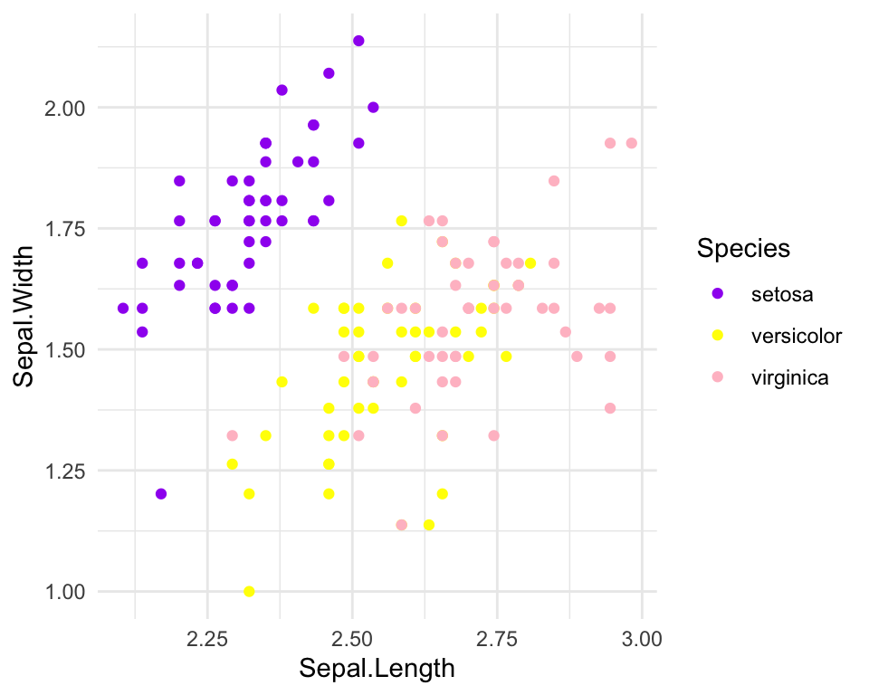
En fantastisk pakke er RColorBrewer. Pakken indeholder mange forskellige farvepaletter (“colour palettes”), det vil sige grupper af farver, der passer godt sammen. Man kan derfor slippe for selv at sammensætte en farvekombination, der passer til plottet. Nogle af farvepaletterne tager også hensyn til farveblindhed, eller om man ønsker en farvegradient eller et sæt diskrete farver, som tydeligt adskiller sig fra hinanden.
I følgende eksempel indlæser jeg pakken RColorBrewer og anvender funktionen scale_colour_brewer() med indstillingen palette="Set1":
#install.packages("RColorBrewer")
library(RColorBrewer)
#manuelt løsning
ggplot(iris, aes(x=Sepal.Length, y=Sepal.Width, colour=Species)) +
scale_colour_brewer(palette="Set1") +
geom_point() +
theme_minimal() 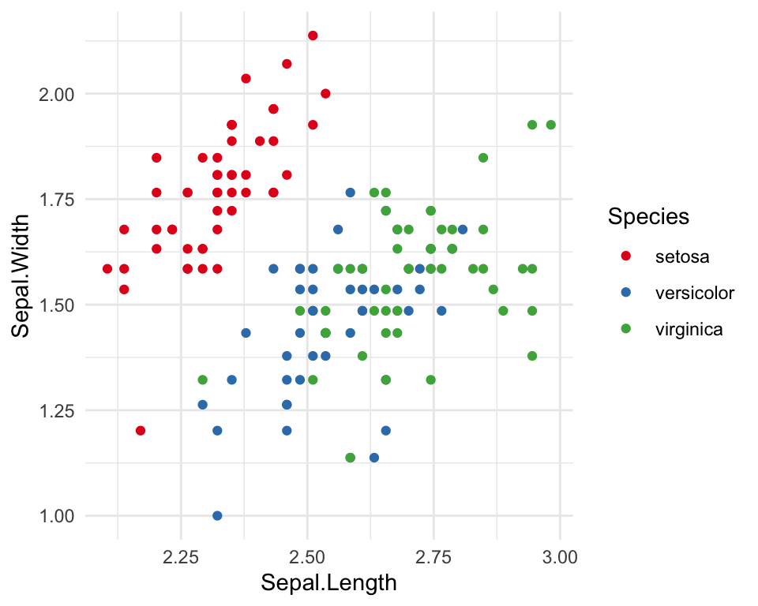
Bemærk, at både scale_color_manual() og scale_color_brewer() bruges til at sætte farver på punkter og linjer, hvorimod man ved boxplots eller barplots bruger scale_fill_manual() eller scale_fill_brewer() til at sætte farver på de udfyldte områder. I følgende eksempel vil jeg gerne sætte farver på de udfyldte områder i et boxplot:
ggplot(iris,aes(x=Species,y=Sepal.Length,fill=Species)) +
geom_boxplot() +
scale_fill_brewer(palette="Set2") +
theme_minimal()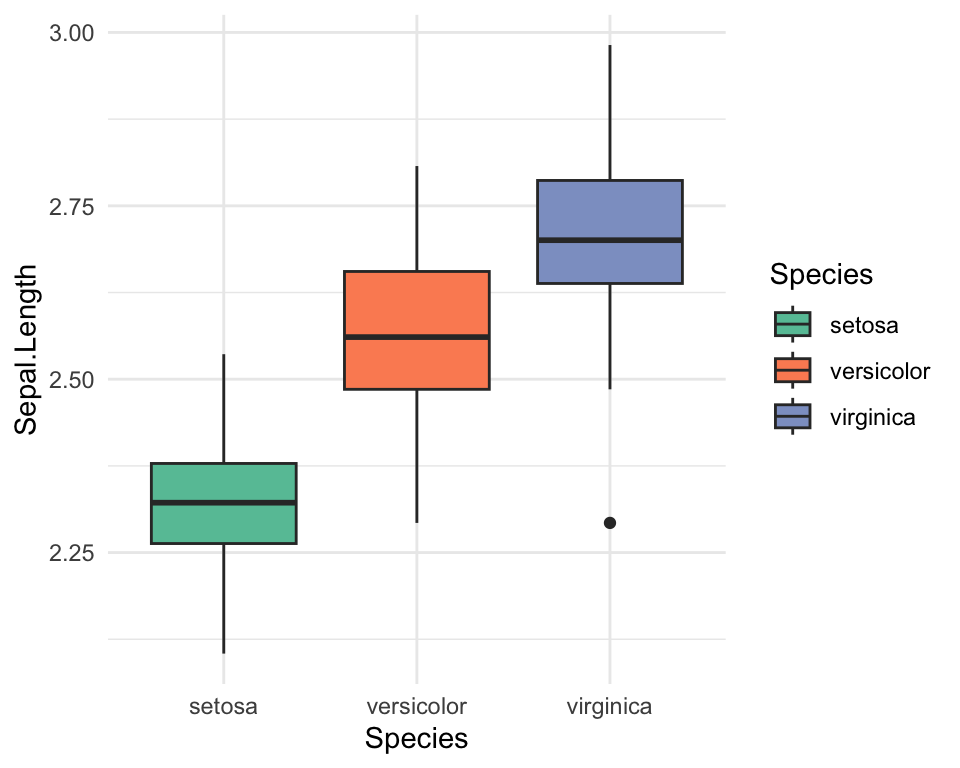
Her er en oversigt over de fire funktioner:
| Funktion | Beskrivelse |
|---|---|
scale_fill_manual(values=c("firebrick3","blue")) |
Bruges til manuelle farver i forbindelse med boxplots og barplots mv. |
scale_color_manual(values=c("darkorchid","cyan4")) |
Bruges til manuelle farver i forbindelse med punkter og linjer mv. |
scale_fill_brewer(palette="Dark2") |
Bruger farvepaletter fra RColorBrewer i forbindelse med boxplots, barplots mv. |
scale_color_brewer(palette="Set1") |
Bruger farvepaletter fra RColorBrewer i forbindelse med punkter og linjer mv. |
Der er også andre muligheder, hvis man har behov for dem – for eksempel kan man søge efter scale_fill_gradient() til kontinuerte data.
Farver i RColorBrewer
Her er en nyttig reference, der viser de forskellige farvepaletter i pakken RColorBrewer.
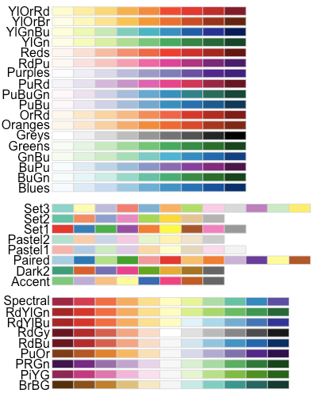
5.3.3 Punktformer
Ligesom man kan lave forskellige farver, kan man også lave forskellige punktformer. Vi starter med den automatiske løsning, ligesom vi gjorde med farver. Når det er en variabel, vi angiver, skal variabelnavnet skrives inden i aes(). shape er en parameter, der er specifik for geom_point(). Derfor vælger vi at skrive en ny aes() inden i geom_point() i stedet for inden i funktionen ggplot(). Husk, at man i funktionen ggplot() specificerer globale parametre, der gælder for hele plottet, mens man i funktionen geom_point() angiver parametre, der kun gælder for geom_point(). Se følgende eksempel:
ggplot(data=iris, aes(x = Sepal.Length, y = Sepal.Width, color = Species)) +
scale_color_brewer(palette="Set2") +
geom_point(aes(shape=Species)) +
theme_minimal()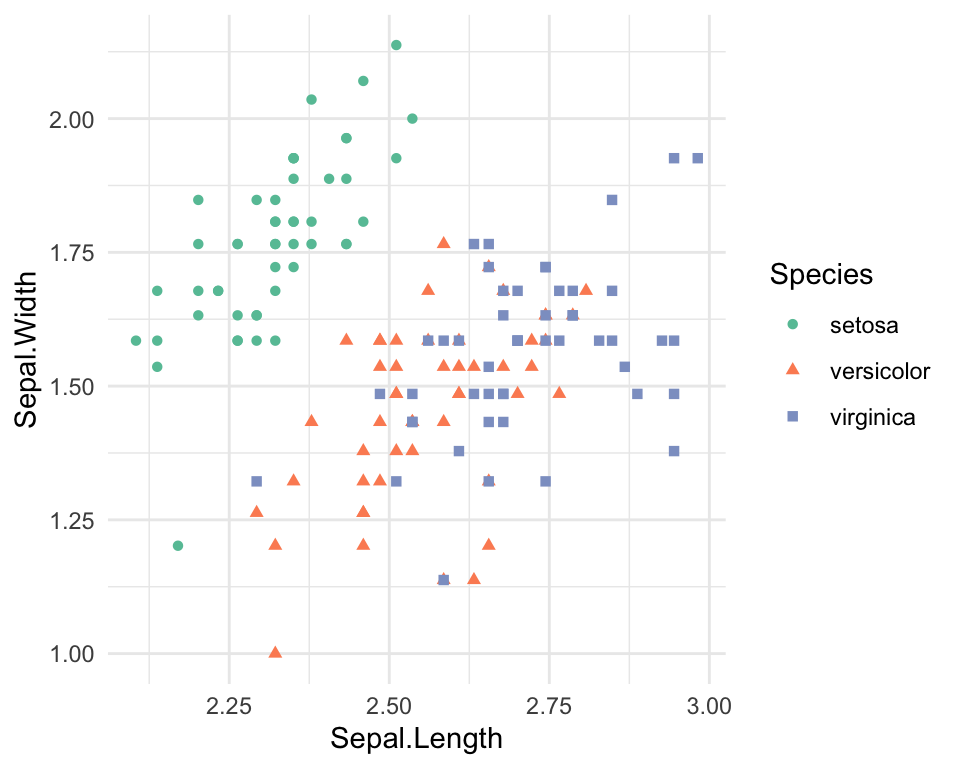
Nu har vi både en farve og en punktform til hver art i variablen Species.
Indstil punktform manuelt
Hvis vi ikke bryder os om de tre automatiske punktformer, kan vi ændre dem ved at bruge scale_shape_manual(). Her vælger vi for eksempel values=c(1,2,3), og i referencen nedenfor kan du se sammenhængen mellem de numeriske værdier og punktformerne, så du kan vælge dine favoritter.
ggplot(data=iris, aes(x = Sepal.Length, y = Sepal.Width, colour=Species)) +
geom_point(aes(shape=Species)) +
scale_color_brewer(palette="Set2") +
scale_shape_manual(values=c(1,2,3)) +
theme_minimal()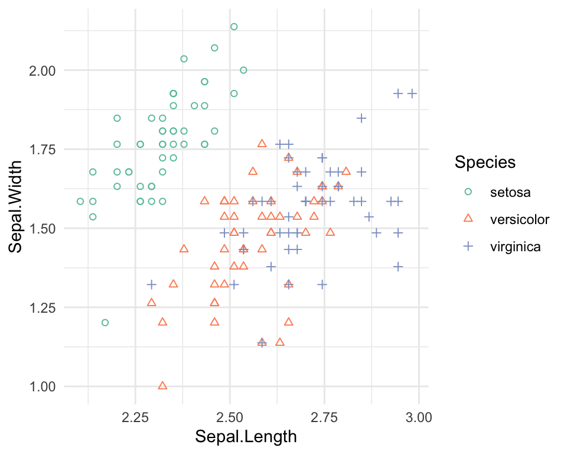
Reference for punktformer
Her er referencetabellen for forskellige punktformer i ggplot2:
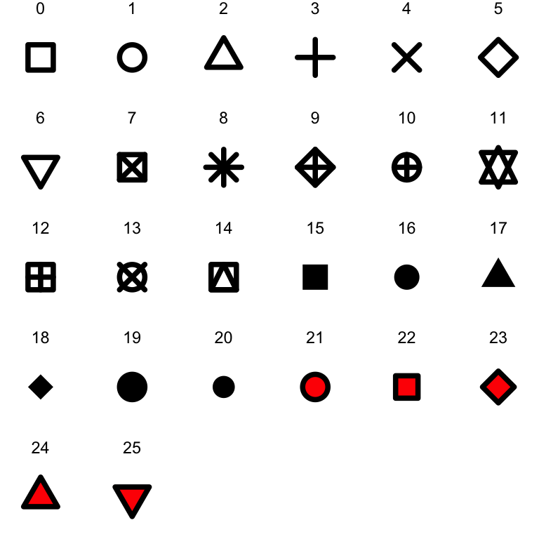
5.4 Annotationer (geom_text())
5.4.1 Tilføjelse af etiketter direkte på plottet
Man kan bruge geom_text() til at tilføje tekst til punkterne direkte på plottet. Her kan man angive, hvad teksten skal være – i dette tilfælde specificerer vi navnene på bilerne fra datasættet mtcars. Plottet er et scatter plot mellem variablerne mpg og wt.
data(mtcars)
mtcars$my_labels <- row.names(mtcars) #take row names and set as a variable
ggplot(mtcars,aes(x=mpg,y=wt)) +
geom_point() +
geom_text(aes(label=my_labels)) +
theme_minimal()For at gøre det nemmere at læse kan man også fjerne selve punkterne:
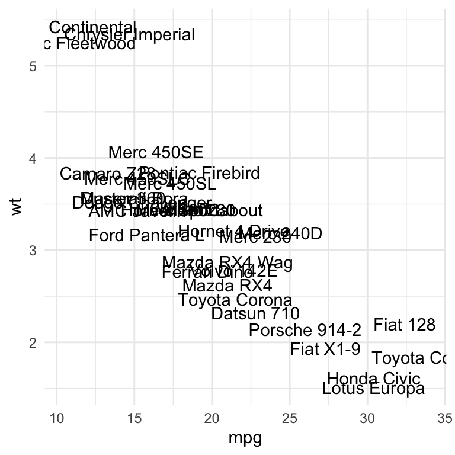
Teksten på plottet kan stadig være svær at læse. En god løsning er at bruge R-pakken ggrepel, som vist i følgende eksempel:
5.4.2 Pakken ggrepel til at tilføje tekstetiketter
For at anvende pakken ggrepel på datasættet mtcars skal man blot erstatte geom_text() med geom_text_repel():
library(ggrepel)
ggplot(mtcars,aes(x=mpg,y=wt)) +
geom_point() +
geom_text_repel(aes(label=my_labels)) +
theme_minimal()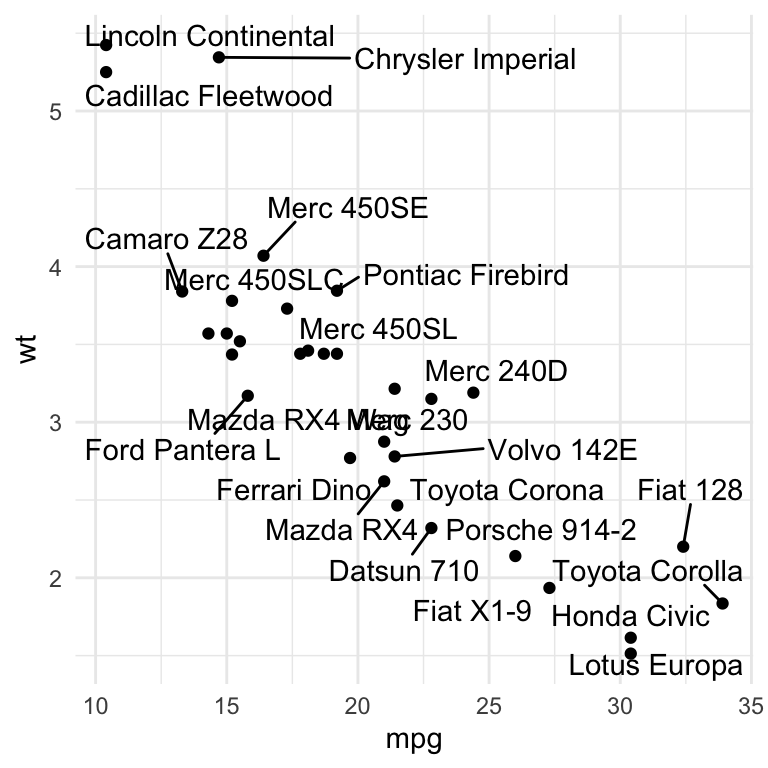
Nu kan vi se, at der ikke er nogen etiketter, som ligger oven i hinanden, fordi geom_text_repel() placerer dem tæt på deres tilhørende punkter uden overlap. Ved nogle punkter har funktionen også tilføjet en forbindelseslinje for at gøre det tydeligt, hvilket punkt teksten refererer til.
Vi har dog fået en advarsel i ovenstående kode. Hvis vi vil undgå denne advarsel, kan vi f.eks. specificere max.overlaps = 20:
library(ggrepel)
ggplot(mtcars,aes(x=mpg,y=wt)) +
geom_point() +
geom_text_repel(aes(label=my_labels),max.overlaps = 20) +
theme_minimal()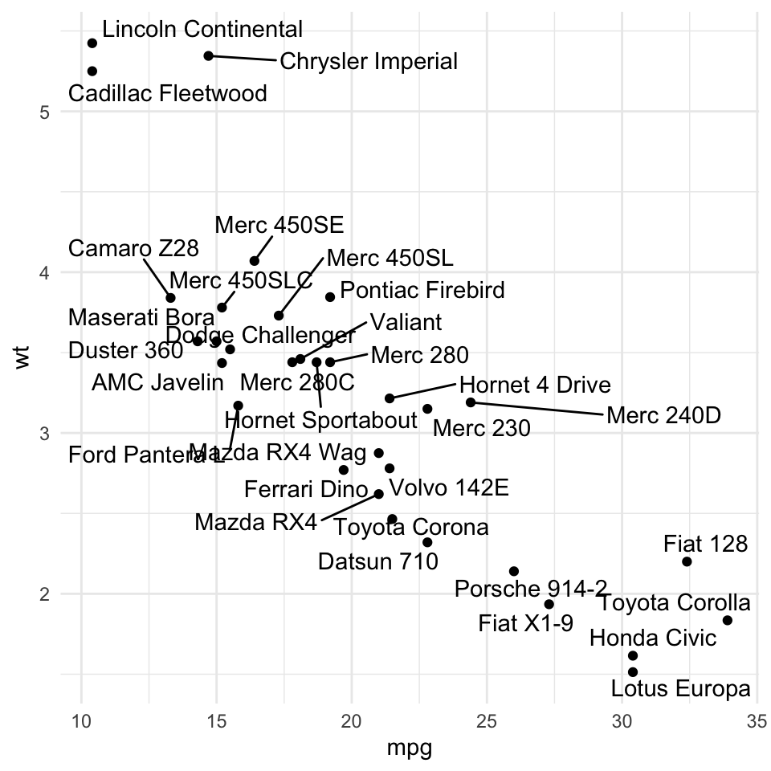
Nu kan du se, at du ikke længere får en advarsel, og der er tilføjet tekst til alle punkterne.
5.4.3 Tilføjelse af rektangler i interesseområder (annotate())
Hvis man gerne vil fremhæve et bestemt område i plottet, kan man bruge funktionen annotate(). Prøv selv at regne ud, hvad indstillingerne inden i annotate() betyder i det følgende eksempel:
ggplot(mtcars,aes(x=mpg,y=wt)) +
geom_point() +
geom_text_repel(aes(label=my_labels)) +
annotate("rect",xmin=18,xmax=23,ymin=2.5,ymax=3,alpha=0.2,fill="orange") +
theme_minimal()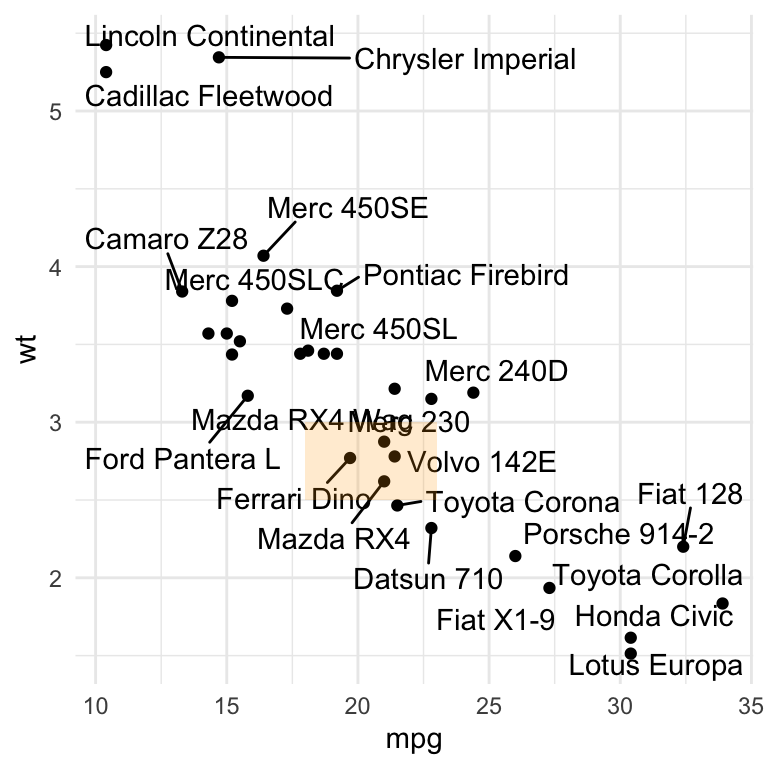
Man kan også benytte den samme funktion til at tilføje tekst på et bestemt sted:
ggplot(mtcars,aes(x=mpg,y=wt)) +
geom_point() +
geom_text_repel(aes(label=my_labels)) +
annotate("rect",xmin=18,xmax=23,ymin=2.5,ymax=3,alpha=0.2,fill="orange") +
annotate("text",x=25,y=2.75,label="Cars of interest",col="orange") +
theme_minimal()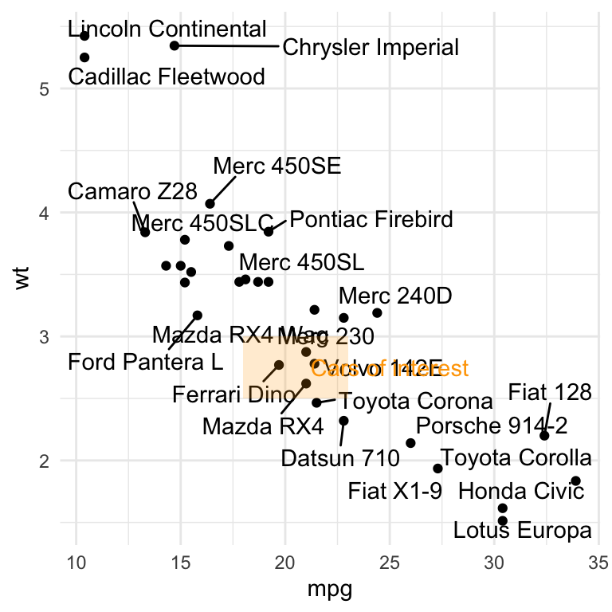
5.5 Adskille plots med facets (facet_grid() / facet_wrap())
En stor fordel ved ggplot2 er muligheden for at bruge funktionerne facet_grid() og facet_wrap() til at opdele værdierne af en kategorisk variabel over flere delplots. I følgende kode får vi et density plot, hvor de tre kurver, der tilhører de tre arter, ligger oven på hinanden i det samme plot:
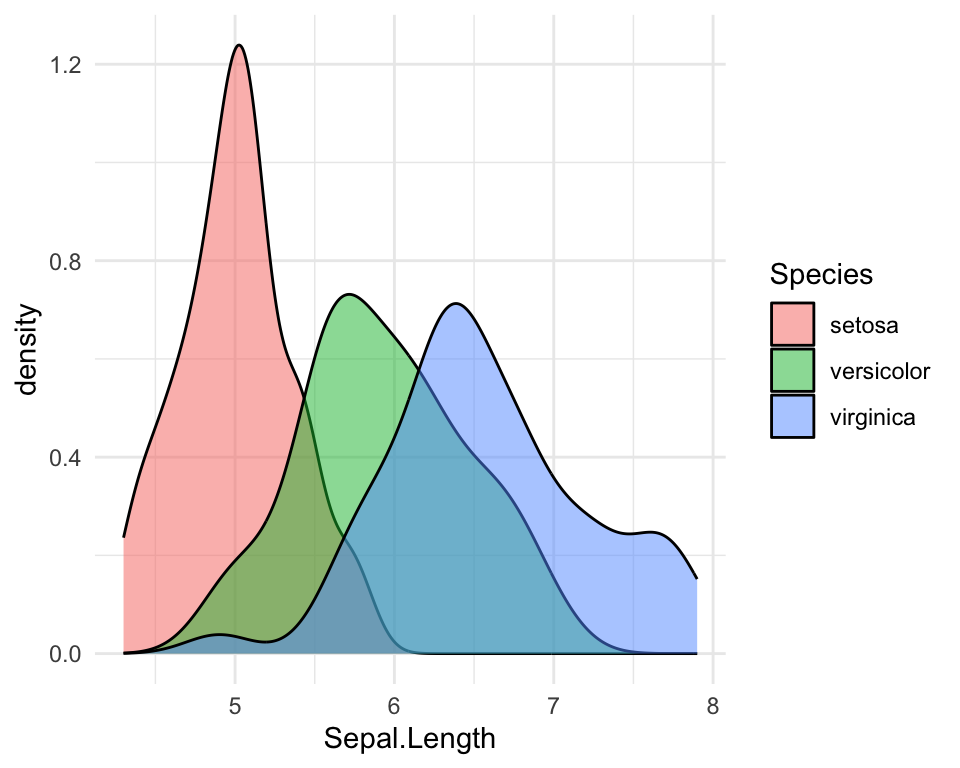
Med funktionerne facet_grid() og facet_wrap() bruger vi ~ (tilde) til at angive, hvordan vi gerne vil visualisere de forskellige delplots. Vi angiver, om vi ønsker at opdele dem over rækker (variablerne til venstre for ~) eller over kolonner (variablerne til højre for ~).
Det ovenstående density plot af Sepal.Length kan adskilles efter Species, således at man får tre plots i hver sin kolonne (ét for hver af de tre arter) ved hjælp af facet_grid()-funktionen:
ggplot(iris,aes(x=Sepal.Length,fill=Species)) +
geom_density(alpha=0.5) +
facet_grid(~Species) + #split Species into different column-wise plots
theme_minimal()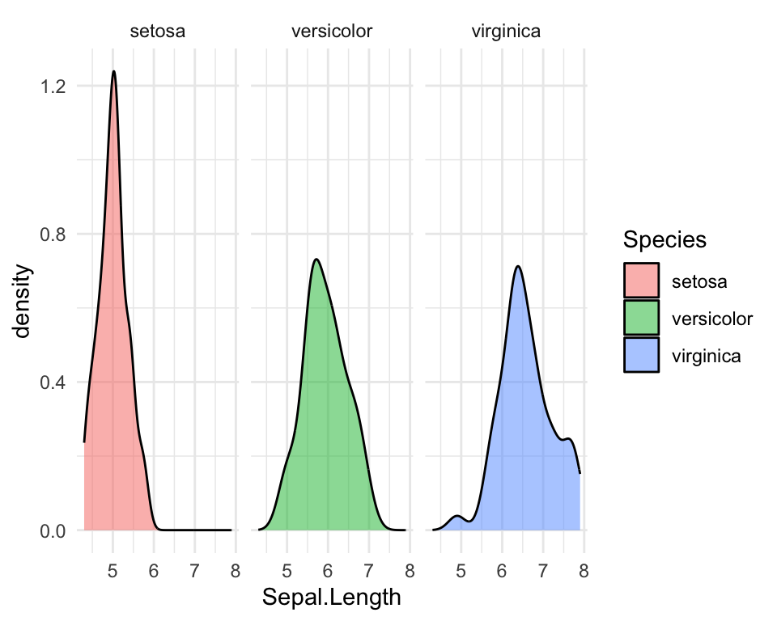
Man kan også vælge at fordele plottene over rækkerne ved hjælp af facet_grid(). Her skal man dog huske at bruge et . efter ~ for at angive, at man kun vil adskille plots over rækkerne, mens man til gengæld kan udelade ., hvis man kun vil adskille over kolonner som i det foregående eksempel:
ggplot(iris,aes(x=Sepal.Length,fill=Species)) +
geom_density(alpha=0.5) +
facet_grid(Species~.) + #split Species into different column-wise plots
theme_minimal()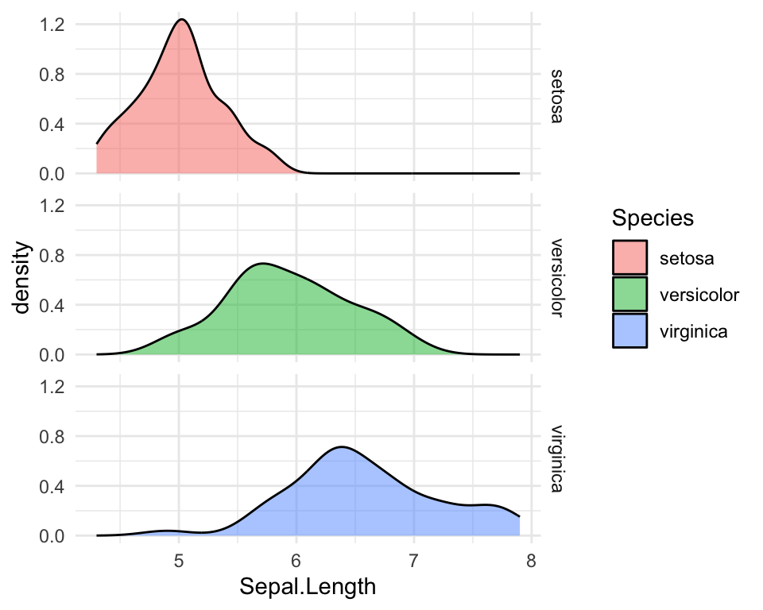
Her angives Sepal.Group ~ Species, hvilket betyder, at plottene bliver adskilt efter både Sepal.Group og Species – Sepal.Group over rækkerne og Species over kolonnerne – ved hjælp af facet_grid()-funktionen:
ggplot(iris,aes(x=Sepal.Length,fill=Species)) +
geom_density(alpha=0.5) +
facet_grid(Sepal.Group~Species) + #split Species into different column-wise plots
theme_minimal()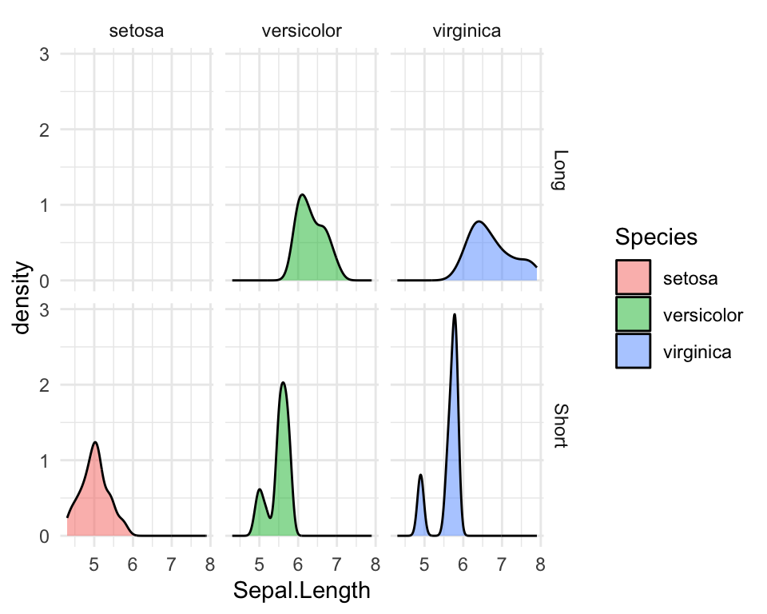
Bemærk forskellen mellem facet_grid() og facet_wrap():
#same plot, replace facet_grid with facet_wrap
ggplot(iris,aes(x=Sepal.Length,fill=Species)) +
geom_density(alpha=0.5) +
facet_wrap(Sepal.Group~Species) +
theme_minimal()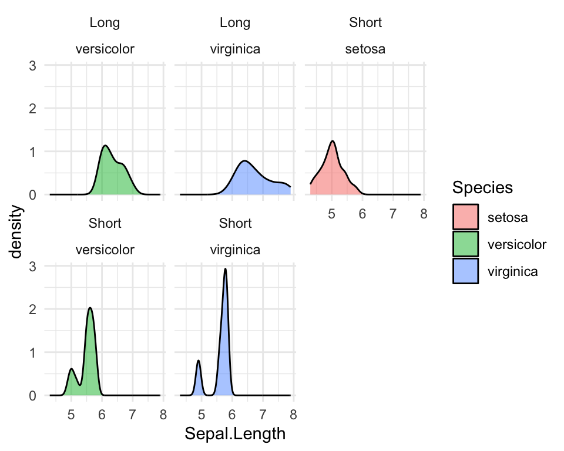
I facet_grid() er layoutet fastlåst som et gitter (“grid”). Vi får således 6 plots i et 2 x 3-gitter (2 niveauer for variablen Sepal.Group og 3 niveauer for variablen Species), og det sker, selvom den ene kombination ikke har nogen data – der findes altså ingen observationer, hvor Species er "setosa" og Sepal.Group er "Long", men der vises et tomt plot alligevel for at bevare strukturen. Med facet_wrap() bliver plots uden data udeladt, og i dette tilfælde får man 5 plots i et bånd (“ribbon”).
Med facet_wrap() kan man også angive antallet af rækker og kolonner, man vil have til plottene. For eksempel kan man angive nrow = 1 eller ncol = 5 for at få alle fem plots på én række:
ggplot(iris,aes(x=Sepal.Length,fill=Species)) +
geom_density(alpha=0.5) +
facet_wrap(Sepal.Group~Species,nrow = 1) +
theme_minimal()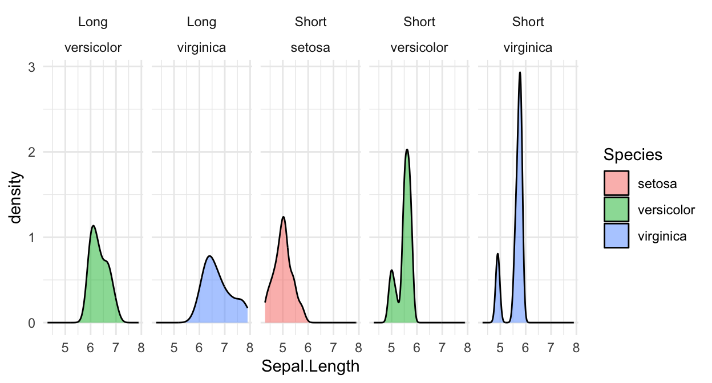
Til sidst kan det være, at vi gerne vil frigøre skalaen på y-aksen. På den måde har ikke alle plots de samme maksimale y-værdier, og de enkelte plots benytter i stedet deres egne værdier til at bestemme skalaen. Det kan være brugbart, hvis man sammenligner forskellige målinger. Vær dog opmærksom på, hvad der giver bedst mening – hvis man direkte vil sammenligne to plots, er det bedre, at de deler samme y-akseskala.
#same plot, replace facet_grid with facet_wrap
ggplot(iris,aes(x=Sepal.Length,fill=Species)) +
geom_density(alpha=0.5) +
facet_wrap(Sepal.Group~Species,ncol = 5,scales = "free") +
theme_minimal()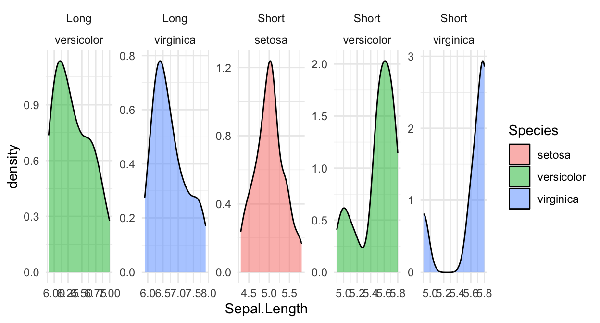
Disse funktioner er meget brugbare, selvom de opnår stort set samme resultat. Der er dog små forskelle mellem dem, som er værd at huske.
5.6 Gem dit plot
Her bruger vi R Markdown til at lave en rapport, som indeholder vores plots. Men det kan også være, at man gerne vil gemme sit plot som en fil på computeren. Til det kan man bruge kommandoen ggsave():
Figuren vil blive gemt i dit working directory (den mappe, hvor din .Rmd-fil ligger). Filtypen .pdf kan erstattes med andre formater, f.eks. .png eller .jpeg. Hvis man gerne vil redigere sit plot (f.eks. i Adobe Illustrator eller Inkscape), anbefaler jeg at gemme det som .pdf.
Man kan også ændre højden og bredden på det gemte plot med width og height:
5.7 Problemstillinger
Problem 1) Lav quizzen “Quiz - ggplot2 dag 2”.
Problem 2) (Øvelse med faktorer og plots)
a) Åbn datasættet mtcars og lav et barplot:
- Brug variablen
cylpå x-aksen og tilføj forskellige farver til de forskellige niveauer (dvs. factor levels) afcyl. - Hvad kunne være et problem med måden,
cyler plottet på? Er farverne vist som forventet i plottet? - Tjek x-aksen – variablen er numerisk, men bør fortolkes som en faktor.
- Lav variablen om til en faktor (eller skriv blot
as.factor(cyl)i selve plottet) og lav dit plot igen.
b) Rediger nedenstående kode, så data fordeles baseret på gear:
- Opdel søjlerne ved at angive farver efter variablen
geari dit plot. gear-søjlerne skal stå ved siden af hinanden (huskposition-argumentet).- Vær igen opmærksom på, hvordan R fortolker variablen.
ggplot(
data = mtcars,
mapping = aes(
x = cyl,
fill = mpg
)
) +
geom_bar(stat = "count") +
theme_minimal()I det følgende spørgsmål arbejder du med datasættet Palmer Penguins. Installer venligst pakken palmerpenguins, hvis du ikke har brugt den før.
Databeskrivelse: The palmerpenguins data contains size measurements for three penguin species observed on three islands in the Palmer Archipelago, Antarctica.
#install.packages("palmerpenguins") #køre hvis ikke allerede installeret
library(palmerpenguins)
library(ggplot2)
library(tidyverse)
head(penguins)FALSE # A tibble: 6 × 8
FALSE species island bill_length_mm bill_depth_mm flipper_length_mm body_mass_g
FALSE <fct> <fct> <dbl> <dbl> <int> <int>
FALSE 1 Adelie Torgersen 39.1 18.7 181 3750
FALSE 2 Adelie Torgersen 39.5 17.4 186 3800
FALSE 3 Adelie Torgersen 40.3 18 195 3250
FALSE 4 Adelie Torgersen NA NA NA NA
FALSE 5 Adelie Torgersen 36.7 19.3 193 3450
FALSE 6 Adelie Torgersen 39.3 20.6 190 3650
FALSE # ℹ 2 more variables: sex <fct>, year <int>Brug venligst ?penguins for at se flere detaljer om variabelnavnene.
Vi skal starte med at rydde lidt op i datasættet. Brug til det formål drop_na() til at fjerne alle rækker med NA-værdier (manglende værdier) – her skal tidyverse-pakken være indlæst:
Problem 3) Manuelle farver og punktformer
a) Lav et spredningsdiagram / scatter plot med ggplot()-funktionen:
bill_length_mmpå x-aksen.bill_depth_mmpå y-aksen.- Giv hver art (variablen
species) sin egen farve. - Sæt et tema.
b) Lav følgende ændringer til dit plot fra a):
- Ændr farverne manuelt – prøv at angive farver med
scale_color_manual(). - Brug forskellige punktformer til hver art i variablen
species. - Prøv at vælge punktformer fra listen (i kursusnotaterne) og specificer dem manuelt.
Problem 4) Koordinatsystemer
Tag udgangspunkt i ovenstående scatter plot fra 3):
a) Brug coord_cartesian(), så kun pingviner med en næblængde (variablen bill_length_mm) mellem 40 og 50 og en næbdybde (variablen bill_depth_mm) mellem 16 og 19 er medtaget på plottet.
b) Brug pakken ggrepel (husk at installere/indlæse den) og tilføj navnene på de forskellige øer som tekstetiketter / labels direkte på plottet.
c) Lav en delmængde af datasættet penguins efter samme betingelser som i a) og brug din nye dataframe som parameteren data i geom_text_repel()-funktionen. Dette undgår, at der bliver plottet tekst for punkter uden for det område, der er angivet med coord_cartesian().
Problem 5) Histogram med facets
Lav et histogram:
- Variablen
flipper_length_mmpå x-aksen. - Anvend
facet_grid()til at adskille dit plot i tre dele efter variablenspecies. - Kombiner samtidig forskellige farver med hver art fra
species-variablen. - Ændr om nødvendigt parameteren
binstil noget andet inden igeom_histogram().
Her er en mulig løsning:
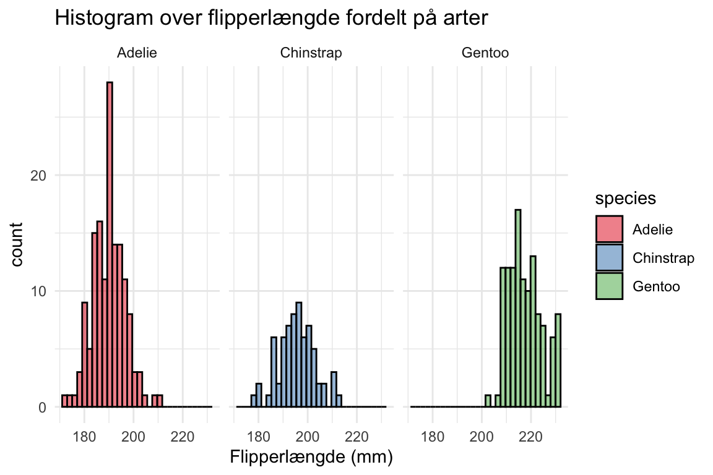
Problem 6) Density plot med facets
a) Lav et tæthetsdiagram / density plot af body_mass_g-variablen:
- Anvend funktionen
facet_grid()til at lave tre plots – ét for hver art i variablenspecies. - Brug også
filltil at opdele hver af dine tre density-kurver efter variablensex(dvs. du har stadig 3 plots, og hvert plot har to density-kurver). - Gør dine density plots gennemsigtige.
- Skriv en sætning om forskellen i
body_mass_gmellem hunner (“females”) og hanner (“males”).
b) Udbyg din facet_grid()-kode til at adskille plottene yderligere, således at du har en gitterstruktur (“grid”) med de forskellige øer (variablen island) på rækkerne og de tre arter (variablen species) på kolonnerne.
c) Kan du forklare, hvorfor der er tomme plots i dit gitter (“grid”)? Eksperimenter f.eks. med facet_wrap() i stedet for facet_grid() for at undersøge det.
Problem 7) Koordinatsystemer
Lav et søjlediagram / barplot af antallet for species opdelt efter sex:
Anvend
coord_flip()for at gøre plottet vandret (horisontalt).Vælg nogle farver – f.eks.
palette = "Accent"fraRColorBrewer.Ændr rækkefølgen af de tre søjler, således at arten med flest observationer er øverst, og arten med færrest er nederst.
Prøv også at tilføje
scale_y_reverse()og kig på resultatet.
Her er en mulig løsning:
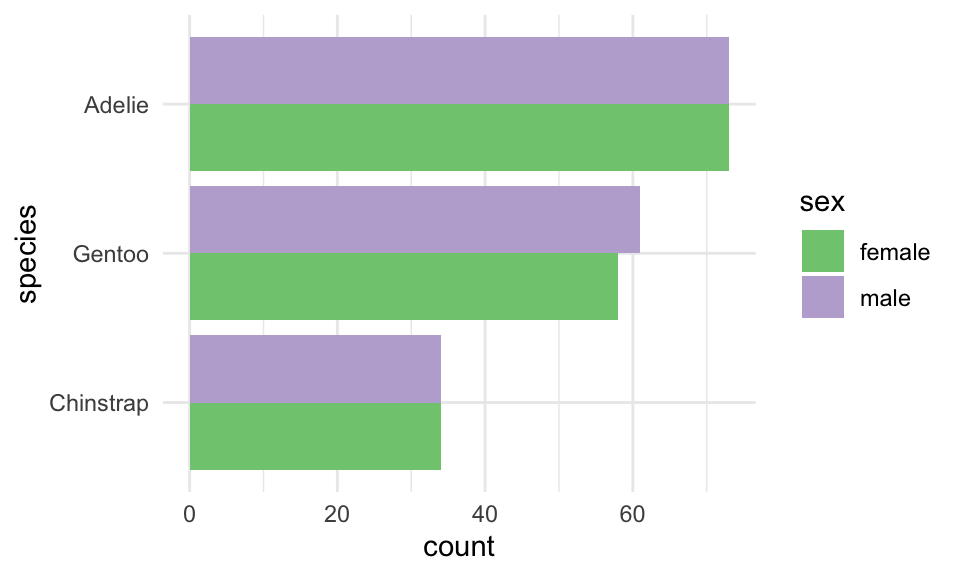
Problem 8) Lav et boksplot / boxplot af body_mass_g opdelt efter species:
Tilføj “jitter”-punkter oven på boksplottet.
Specificer nogle farver manuelt til både boksene og punkterne (én farve til hver art).
Giv plottet en passende titel og akseetiketter.
Tilføj en ny variabel
island_binarytilpenguins, som er"Biscoe", hvisislander'Biscoe', og"not Biscoe"hvis ikke.Adskil plottene ved at opdele efter
island_binary.Ekstra: Prøv
?geom_violinsom erstatning forgeom_boxplot().
Problem 9) Annotationer og linjer
a) Lav et spredningsdiagram / scatter plot af bill_length_mm mod bill_depth_mm:
- Anvend passende titel, etiketter og tema.
- Anvend forskellige farver for de tre
species. - Tjek funktionen
?annotateog brug den medgeom = "text"samt passende x- og y-akseværdier til at tilføjespecies-navne som tekst direkte på plottet (se eksemplet nedenfor). - Udforsk, hvordan man gør teksten større, som i løsningen nedenfor.
- Fjern legenden med
show.legend = FALSEinden igeom_point().
Her er en mulig løsning:
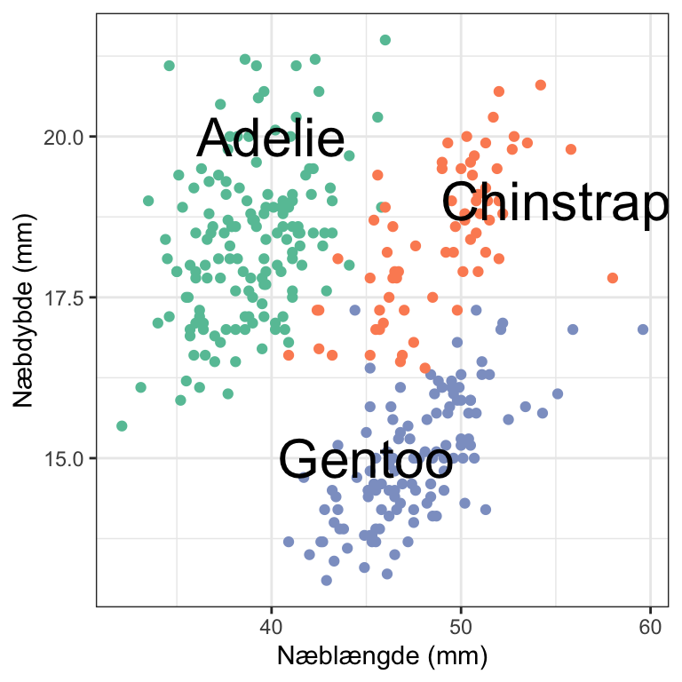
b) Vi vil gerne tilføje nogle lodrette og vandrette linjer til plottet, som viser gennemsnitsværdierne for variablerne for de tre arter:
- Først skal du bruge
tapply()til at beregne de gennemsnitlige værdier for henholdsvisbill_length_mmogbill_depth_mmopdelt efterspecies(gem dem sommean_lengthogmean_depth). - Brug
mean_lengthogmean_depthtil at tilføje linjer til plottet med den relevante funktion.
c) Kan du tilpasse linjerne, så deres farver matcher punkterne for den samme art (se løsningen nedenfor)? Der er sikkert mange måder at gøre det på, men hvis du har brug for et hint, kan du kigge nedenfor:
- Hint: Start med følgende dataframe, der bruger dine beregnede værdier:
## species mlength mdepth
## Adelie Adelie 38.82397 18.34726
## Chinstrap Chinstrap 48.83382 18.42059
## Gentoo Gentoo 47.56807 14.99664- Angiv parameteren
datatil at være ovenstående dataframe igeom_vline(), og brug lokal æstetik (aes()) til at angive parametre til linjerne. - Gør det samme for
geom_hline(). - Specificer også stiplede (“dashed”) linjer.
Her er en mulig løsning:
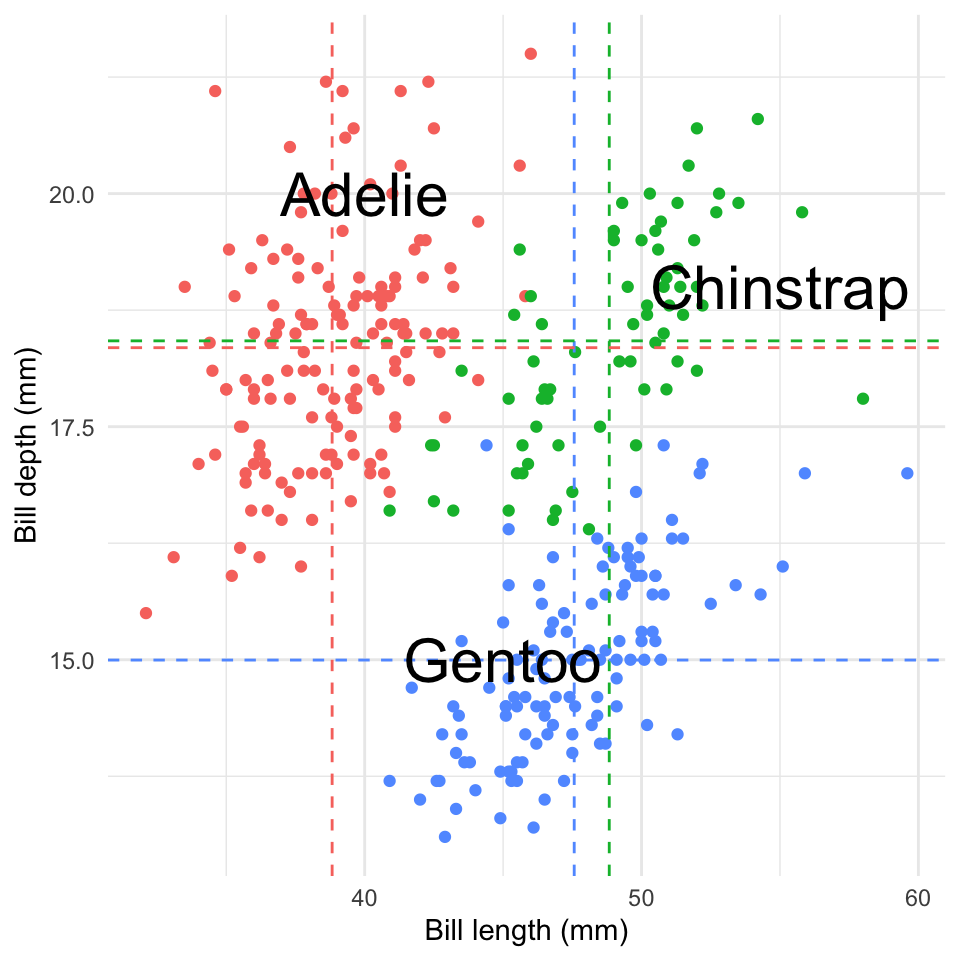
Problem 10) Ekstra: Kig på oversigten (“cheatsheet”) for ggplot2 (klik på “Help” > “Cheatsheets” og vælg den for ggplot2), og prøv nogle af de funktioner, som ikke er blevet dækket i kurset indtil videre! Vi vil gerne høre, hvis du finder noget meget nyttigt, som er blevet udeladt i notaterne.